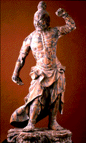

<!--This file created 10/16/97 5:56 PM by Claris Home Page version 2.0-->
<HTML>
<HEAD>
   <TITLE>Mpls Inst Arts - World Mythology: Nio Guardian
   Figures</TITLE>
   <META NAME="GENERATOR" CONTENT="Claris Home Page 2.0">
   <X-SAS-WINDOW TOP="43" BOTTOM="478" LEFT="28" RIGHT="558">
<HEAD>
</HEAD>
<BODY TEXT="#111111" LINK="#660000" ALINK="#AA0000" VLINK="#444444" BACKGROUND="backgroundbrown.gif">

<P><FONT SIZE="+2">Curriculum Materials: World Mythology</FONT>
<HR>
<!--------Top Myth Menu------><TABLE BORDER="3">
   <TR>
      <TD>
         <P><CENTER><A HREF="introduction.html#top">Introduction</A>
         ~ <A HREF="mythbyimage.html#top">Myth by Image</A> ~
         <A HREF="culturelist.html#top">Myth by Culture</A> ~
         <A HREF="myths.html#top">Mythological Comparisons</A> ~
         <A HREF="glossary.html#top">Glossary</A> ~
         <A HREF="suggestedreading.html#top">Suggested Readings</A> ~
         <A HREF="downloadables.html#top">Downloadable Resources</A>
         ~ <A HREF="../tta/classroom_materials_order.html">How to Order</A> ~
         <A HREF="myth_evaluation.html#top">Your Comments Wanted</A>
         ~ <A HREF="slide23.html">Story</A> ~
         <A HREF="#Background">Background</A> ~
         <A HREF="#Questions">Questions</A></CENTER>
      </TD></TR>
</TABLE>
<HR>
<A NAME="top"></A>&nbsp;<TABLE BORDER="0" CELLSPACING="10" WIDTH="445">
   <TR>
      <TD>
         <P><A HREF="full_jpg/23.jpg"></A><BR>
         
         <B>Image 23</B><BR>
         
         <FONT SIZE="+2">Nio Guardian Figures</FONT><BR>
         
         Japan<BR>
         
         About 1360<BR>
         
         Cypress wood with traces of lacquer<BR>
         
         76 inches each<BR>
         
         Gift of the Regis Corporation 83.76.1,2<BR>
         
         
         <HR>
         <A NAME="Key"></A></P>
         
         <P><CENTER><B>Key Ideas</B></CENTER></P>
         
         <UL>
            <LI>The Japanese story of Kongorikishi
            (congo-ree-kaw-she) justified the use of physical force
            to defend the Buddha and his worshipers against evil.
            
            <LI>The warrior rulers of 14th-century Japan valued
            bravery, honor, and strength.
            
            <LI>The enormous size and energetic poses of these Nio
            (NEE-oh) guardian sculptures made them imposing forces
            outside the gates of a Buddhist temple
            complex.<BR CLEAR="left">
            
         
         </UL>
         
         <P>
         <HR>
         </P>
         
         <P><CENTER><B>Story</B></CENTER></P>
         
         <P>Once there was a king who had two wives. His first wife
         bore a thousand children who all decided to become monks and
         follow the Buddha's law. His second wife had only two sons.
         The youngest was named Non-o (NON-oh) and helped his monk
         brothers with their worship. The eldest, Kongorikishi,
         however, had a much more aggressive personality. He vowed to
         protect the Buddha and his worshipers by fighting against
         evil and ignorance.
         <HR>
         <A NAME="Background"></A></P>
         
         <P><CENTER><B>Background</B></CENTER></P>
         
         <P><B>Nio </B><BR>
         
         Kongorikishi was the first of the heavenly kings, called
         Nio. The Nio were originally Hindu gods in India, who were
         adopted by the Japanese into the Buddhist pantheon. The Nio,
         also called Kongo, all came to be considered aggressive
         guardian deities in the tradition of Kongorikishi. Within
         the generally pacifist traditions of Buddhism, stories of
         Nio guardians like Kongorikishi justified the use of
         physical force to protect cherished values and beliefs
         against evil.</P>
         
         <P><B>Samurai </B><BR>
         
         Widespread discontent with the dictatorship of the Taira
         (tie-RAH) clan in Kyoto (key-OH-toe) caused an enormous
         uprising in 1180. Five years of brutal civil war ensued,
         ending when the Minamoto clan overthrew the Taira. The
         Minamoto handed control of the new government to a group of
         loyal warriors, called samurai (SAM-oo-rye). The samurai
         unified their forces under a code known as the "way of the
         warrior" which valued bravery, honor, and strength.</P>
         
         <P>In art, the luxurious tastes and refinement of the Kyoto
         nobility were replaced by the directness and simplicity of
         the samurai. The dynamic spirit of the age demanded art that
         was similarly big and brash. The civil war had severely
         damaged many temples, and artists set about rebuilding,
         restoring, and replacing lost sculptures. In many instances
         they emulated the <A HREF="glossary.html#IDEALIZED">
         IDEALIZED</A> but <A HREF="glossary.html#NATURALISTIC">
         NATURALISTIC</A> art made hundreds of years earlier during
         the Nara period (645-784). Among the many sculptures
         produced were pairs of large Nio guardian figures that stood
         outside Buddhist temple complexes.</P>
         
         <P><B>Nio Guardian Figures </B><BR>
         
         These Nio guardian figures named Misshaku (mish-AH-koo)
         Kongo (congo)-with his fist raised-and Naeren (NAY-ren)
         Kongo (congo) represent the use of overt power and latent
         power, respectively. They display the energy and realism
         characteristic of late 14th-century Japanese sculpture.</P>
         
         <P>Standing on banks of fluffy clouds, the guardians are
         enormously muscled half-nude figures. Their features have
         been skillfully exaggerated by an artist well versed in the
         human form. Bulging muscles in their huge chests and arms
         communicate power even at a great distance. This exaggerated
         <A HREF="glossary.html#REALISM"> REALISM</A> continues in
         the Nios' popping veins, extended jaws, and even in their
         delicate fingernails and toenails. The guardians' hair,
         pulled tightly into topknots, adds to their imposing height.
         </P>
         
         <P>For all of their power, the Nio are also decorative.
         Their flower-shaped nipples and rippled rib cages form an
         elegant <A HREF="glossary.html"> PATTERN</A>. The
         dark and light areas on the sculptures are traces of
         <A HREF="glossary.html#GESSO">GESSO</A> and black
         <A HREF="glossary.html#LACQUER"> LACQUER</A> that once
         covered their surfaces. Flesh-colored pigments covered
         portions of the lacquer.</P>
         
         <P>The Nio exhibit tremendous energy. Their arms, legs, and
         clublike feet dramatically jut into space, and drapery
         swirls violently around them. The Nio's bulging eyes,
         furrowed brows, flaring nostrils, and distorted grimaces
         bring their faces to life.</P>
         
         <P>Conceived as a pair, the Nio complement each other.
         Misshaku Kongo, representing overt power, bares his teeth
         and raises his fist in action, while Naeren Kongo,
         representing latent might, holds his mouth tightly closed
         and waits with both arms tensed but lowered.</P>
         
         <P>Each Nio figure represents a particular cosmic sound.
         Misshaku Kongo's open mouth sounds out "ah," meaning birth.
         Naeren Kongo sounds "om," meaning death. Thus, in one cosmic
         sound life is encapsulated at a temple doorway, reminding
         viewers that life is fleeting and that good karma is
         necessary to avoid rebirth on the Wheel of Life.
         <HR>
         </P>
         
         <P><CENTER><B><A NAME="Questions"></A>Discussion
         Questions</B></CENTER></P>
         
         <P><B>LOOK</B><BR>
         
         <B>1. </B> <B>Tell the story of Kongorikishi. </B>This story
         justified the use of physical force to defend the Buddha and
         his worshippers against evil. How do these guardian figures,
         part of the tradition of Kongorikishi, personify physical
         force? Consider: size, musculature, body type, and pose.
         <B>These figures are over six feet tall, bulging muscles and
         stocky build suggest strength, poses suggest energetic
         movement.</B></P>
         
         <P><B>2.</B> What are these figures standing on?
         <B>Clouds.</B> How can you tell? <B>Bases are carved in
         swirling mist-like patterns. </B> What does that tell us
         about their domain? <B>Heavenly domain rather than
         earthly.</B></P>
         
         <P><B>3.</B> Compare these two guardian figures. What is the
         same about them? <B> Height, weight, musculature and body
         type, body decoration and jewelry, hairstyle, facial
         features, garments. </B>What is different? <B> Poses or
         gestures, facial expressions.</B></P>
         
         <P><B>4.</B> One of the figures stands for latent power and
         the other stands for direct action. Which is which? How can
         you tell? <B>The figure with its fist raised, Misshaku
         Kongo, stands for direct action. Raised fist, stiff right
         arm and open mouth with bared teeth suggest that this figure
         is physically threatening. Explain that Misshaku Kongo's
         mouth sounds out "ah", meaning birth. The figure with its
         arms lowered, Naeren Kongo, stands for latent power. Lowered
         bent arms close to the body and hand extended in a halting
         gesture, mouth closed, suggest that this figure's power is
         contained, in control. Explain that Naeren Kongo's mouth
         sounds out "om", meaning death.</B></P>
         
         <P><B>5.</B> These Nio Guardian figures would have stood
         outside the entrance to a Buddhist temple. Look carefully at
         these figures standing side by side. Is one made for the
         left side of an entrance and one made for the right? Which
         is which? How can you tell? <B>Misshaku Kong, with raised
         fist, was meant for the left side and Naeren Kongo, with
         arms lowered, was meant for the right. In this
         configuration, Naeren Kongo's lowered arm fits neatly under
         Misshaku Kongo's raised fist, their extended legs are mirror
         images of each other, they face away from each other rather
         than toward each other and their garments flow outward, away
         from the entrance that would have been between them.</B>
         </P>
         
         <P><B>6.</B> In art, NATURALISTIC means representing
         something the way you would see it in nature. STYLIZED means
         representing something by distorting its natural forms to
         express an idea about it. Where has the artist who carved
         these figures used naturalistic representation?
         <B>Musculature on arms, abdomen, facial expression, drapery
         on clothing.</B> Where has he used stylized representation?
         <B>Hair, ears, chest and rib cage, nipples, hands,
         feet.</B><BR>
         
         
         <HR>
         <BR>
         
         <B>THINK</B><BR>
         
         <B>1.</B> These wooden Nio Guardian figures were originally
         covered with black lacquer. Some traces of the lacquer still
         appear on the sculptures. Would they be more or less
         threatening if they still had their black coating? Explain.
         <B>No right answer.</B></P>
         
         <P><B>2.</B> Nio Guardian figures served as symbolic
         protection at a Buddhist temple hundreds of years ago. What
         are symbols of protection that we see today? <B>Operation
         Identification stickers on front doors, McGruff safe house
         signs, bars on windows, traffic signs serve as protection
         for drivers.</B></P>
         
         <P><B>3.</B> These two guardian figures stood outside an
         entrance to a Buddhist temple. Buddhism is a nonviolent
         religion. What message would these sculptures convey to the
         Buddhist worshippers who pass between them? <B> Recall the
         story of Kongorikishi. Rather than intimidate Buddhist
         worshippers the Nio Guardian figures were meant to reassure
         them that they were protected against evil forces.</B></P>
         
         <P><B>4.</B> Each Nio figure represents a particular cosmic
         sound. Misshaku Kongo's open mouth sounds out "ah", meaning
         birth. Naeren Kongo's mouth sounds out "om", meaning death.
         What purpose might these sounds serve at a Buddhist temple
         entrance? They encompass life, reminding worshippers that
         their spiritual life is contained in the temple.</P>
         
         <P>
         <HR>
      
      </TD></TR>
</TABLE> <TABLE BORDER="3">
   <TR>
      <TD>
         <P><CENTER><A HREF="introduction.html#top">Introduction</A>
         ~ <A HREF="mythbyimage.html#top">Myth by Image</A> ~
         <A HREF="culturelist.html#top">Myth by Culture</A> ~
         <A HREF="myths.html#top">Mythological Comparisons</A> ~
         <A HREF="glossary.html#top">Glossary</A> ~
         <A HREF="suggestedreading.html#top">Suggested Readings</A> ~
         <A HREF="downloadables.html#top">Downloadable Resources</A>
         ~ <A HREF="../tta/classroom_materials_order.html">How to Order</A> ~
         <A HREF="myth_evaluation.html#top">Your Comments Wanted</A>
         ~ <A HREF="slide23.html">Story</A> ~
         <A HREF="#Background">Background</A> ~
         <A HREF="#Questions">Questions</A></CENTER>
      </TD></TR>
</TABLE></P>
</BODY>
</HTML>
